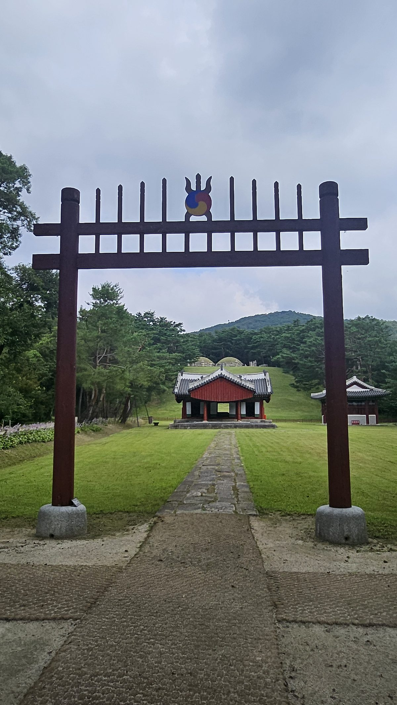
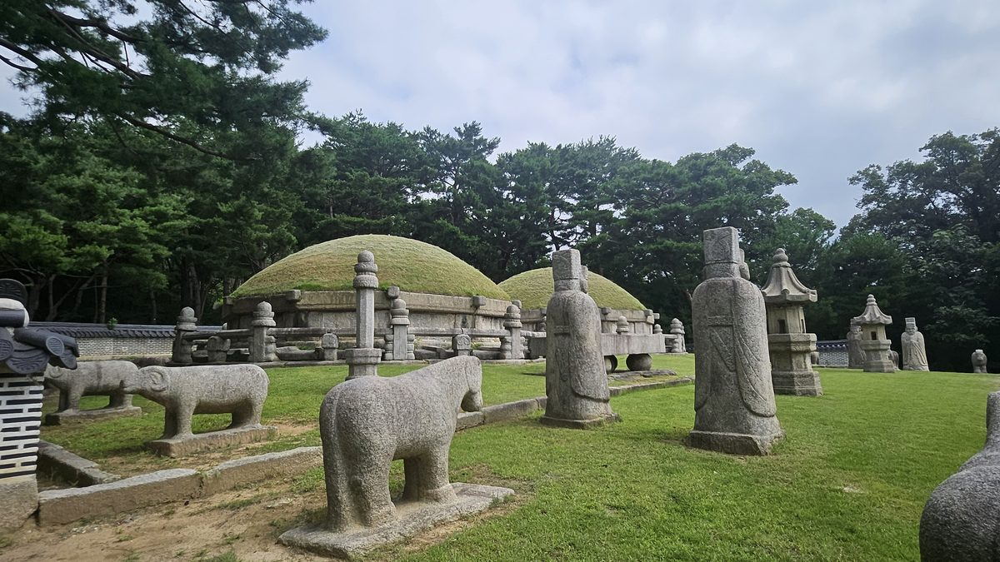
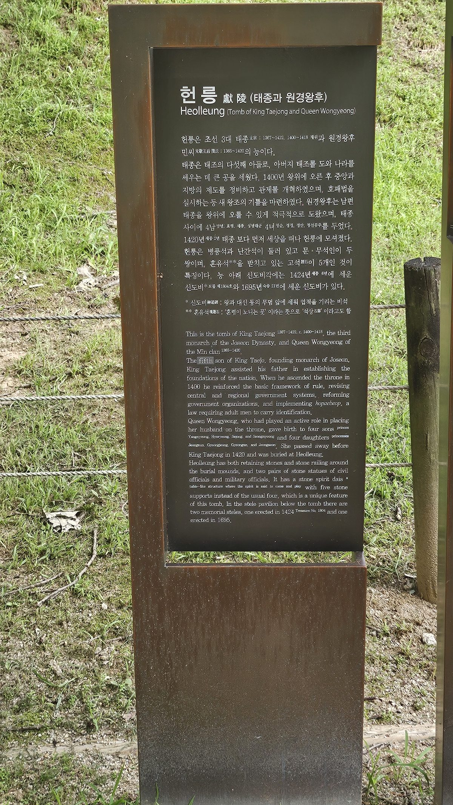
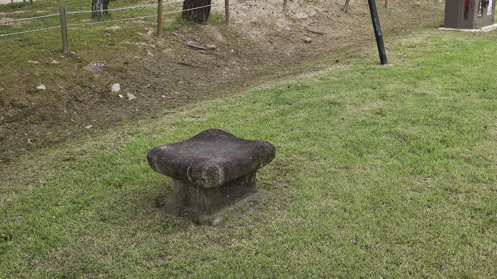
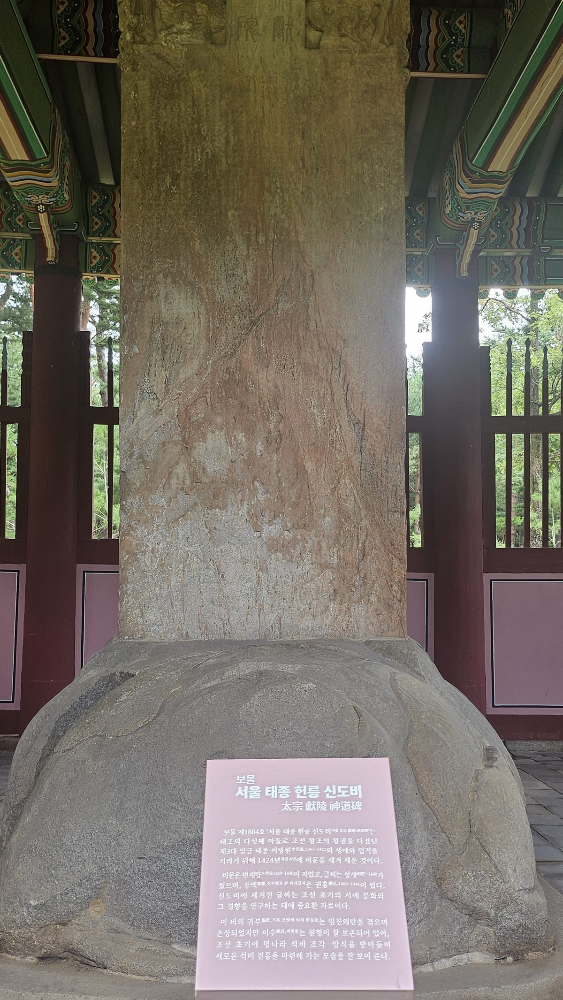

대모산 자락, 나란히 앉은 두 봉분. 왼쪽이 그, 오른쪽이 그녀다. 조선 최초의 쌍릉. 그는 그녀가 죽던 해, 자기 자리를 스스로 비워뒀다. 그런데 살아있는 동안 그는 그녀의 남동생 넷을 모두 죽였다.

광통교에서는 도전의 가능성을 제거하는 태종을 보았고, 창덕궁에서는 그 권력을 제도로 바꾸는 태종을 보았다. 이제 헌릉에서 남은 질문은 하나다. 그 제도와 왕권은 태종 자신이 죽은 뒤에도 살아남았는가.
갑옷을 나르던 여인
1398년 1차 왕자의 난 당일, 이방원이 사병을 이미 해체하고 진영의 무기까지 불태워버린 상황에서 정변이 터졌다. 이때 부인 민씨(훗날 원경왕후)는 몰래 숨겨둔 병장기를 꺼내 남편에게 대응책을 마련해주었고, 직접 남편이 서 있는 곳까지 걸어 나가 화패(禍敗)를 함께하겠다고 나섰다. 심복들이 극구 만류해서야 겨우 돌아섰다.
권력을 향한 가장 위험한 밤, 그의 곁을 지킨 사람은 다른 누구도 아닌 아내였다. 이 정치적 동반자 관계가 없었다면 광통교도, 창덕궁도, 지금 이 능도 없었을 것이다.
도와준 손을 자른 이유
즉위 초부터 부부는 축첩 문제로 격렬히 다퉜다. 원경왕후가 궁인을 불러 힐문하자 태종은 그녀의 시녀와 환관을 궁 밖으로 내쳤다. 그러나 진짜 파국은 정치였다 — 태종은 외척 세력이 커지는 것을 경계해 처남 민무구·민무질 형제, 이어 민무휼·민무회 형제까지 네 명을 모두 제거했다.
1411년에는 원경왕후가 자신에게 "불손한 말을 여러 번 했다"며 폐출하고 새 왕비를 들이겠다고 공개 선언까지 했다. 실행되진 않았지만, 정변의 밤 목숨을 함께하겠다던 아내를 향해 던진 말치고는 잔인했다. 계모(신덕왕후)도, 형제(방번·방석·방간)도, 이제 처가마저 — 권력을 지키는 데 방해가 되는 모든 관계를 그는 같은 방식으로 정리했다.
아들을 위해 물러나고, 아들의 장인을 죽이다
1418년, 태종은 맏아들 양녕을 끝내 지키지 못했다. 거듭된 비행으로 조정의 폐세자 요구가 이어지자 결국 양녕을 폐하고 셋째 충녕(세종)을 세자로 세웠으며, 두 달 뒤 왕위 자체를 물려주고 상왕으로 물러났다. 살아서 왕위를 넘긴 것 — 피로 왕좌를 얻은 사람이 택한, 가장 안전한 승계 방식이었다.
그러나 물러난 뒤에도 그는 병권만은 놓지 않았다. 그리고 곧바로 마지막 저울질이 시작됐다. 세종의 장인 심온이 국구(國舅)로서 영의정에 오르고 사은사로 명나라에 떠나던 날, 배웅 인파가 길을 메웠다는 보고가 상왕에게 올라갔다. 얼마 뒤 병조가 군사 업무를 상왕이 아닌 세종에게만 보고한 일이 문제가 되어 옥사(강상인의 옥)가 일어났고, 고문 끝에 심온이 "주모자"로 지목됐다. 귀국길에 의주에서 체포된 심온은 수원으로 압송되어 하루 만에 자진을 명받았다. 마흔넷, 임금의 장인이 된 지 석 달 만이었다.
처가(민씨 4형제)를 몰살했던 그 논리 그대로, 이번엔 아들의 처가였다. 세자 시절 자신을 도왔던 외척이 어떻게 권력이 되는지 누구보다 잘 아는 사람이었기에, 아들 곁에는 그 불씨조차 남겨두지 않았다. 며느리 소헌왕후를 폐하자는 논의까지 나왔을 정도였다. 왕관을 벗은 뒤에도, 그의 저울은 멈추지 않았다.
먼저 죽은 아내 곁에
1420년 원경왕후가 수강궁에서 먼저 세상을 떠났다. 능을 조성하며 태종은 오른쪽(동쪽) 자리를 의도적으로 비워두고 자신의 능자리를 미리 마련했다. 2년 뒤 1422년 그가 세상을 떠나자 그 자리에 나란히 묻혀 조선 최초의 쌍릉이 완성됐다.

게다가 이 능은 예사롭지 않게 화려하다. 문석인·무석인·석마·석양·석호를 다른 왕릉의 두 배로 배치했는데, 이는 고려 공민왕이 요절한 노국공주를 향한 그리움으로 조성한 현릉·정릉의 제도를 그대로 가져온 것이다. 처가를 몰살하고 폐출까지 거론했던 사람이, 죽음 앞에서는 역사상 가장 애틋한 부부릉의 형식을 빌려온 것이다.
태종이 원경왕후 곁에 묻히길 스스로 택한 것은 사료상 명확한 사실이다. 그러나 이것이 애정 때문이었는지, 왕실의 정당성과 정치적 동반자 관계를 상징적으로 매듭짓기 위한 계산이었는지는 실록이 직접 증언하지 않는다. 두 사람의 실제 관계 기록(축첩 다툼, 처가 숙청, 폐출 선언)을 함께 놓고 보면 후자에 무게가 실리지만, 이는 정황상 해석이지 단정할 근거는 아니다.
능이 말해주는 것들
현장 안내판은 이 능의 특이점 두 가지를 명시한다. 하나는 혼유석을 받치는 고석이 5개라는 점 — 보통 왕릉은 4개다. 다른 하나는 신도비가 신·구 두 기 존재한다는 것으로, 1424년(세종 6) 변계량이 비문을 짓고 세운 구비가 훗날 병화로 글씨가 마모되자 1695년(숙종 21) 신비를 별도로 세워 나란히 남겼다.

능역 안에는 축문을 태우는 소전대(燒錢臺), 제향 때 쓰는 관세상·축상·향상 등 제기 배치도가 정자각 인근에 전시되어 있어 왕실 제례의 실제 절차를 가늠할 수 있다. 능역 외곽 잔디밭에 홀로 놓인 작은 석물은 산신에게 제사 지내는 산신석(山神石)으로 추정되나, 이 역시 현장 안내판만으로는 정확한 명칭을 단정하기 어려웠다.


태종은 죽은 뒤 무엇을 남겼는가
아이러니한 지점에서 시작해야 한다. 태종 본인이 "적장자 승계원칙"을 명분으로 1차 왕자의 난을 일으켰다. 그런데 정작 그는 자신의 적장자 양녕을 폐위시키고 셋째 충녕을 세웠다. 건국 초기의 불안정한 왕위 계승을 직접 겪은 태종에게 후계 문제는 곧 왕권의 안정 문제였다. 그의 선택을 결과에서 되짚어보면, 특정 아들의 지위보다 왕위가 넘어간 뒤에도 왕권이 흔들리지 않는 구조를 만드는 데 무게를 두었다고 읽을 수 있다.
1418년 2월, 막내 성녕대군이 홍역으로 열네 살에 세상을 떠났다. 불과 여섯 달 뒤, 태종은 첫째 양녕을 폐세자하고 셋째 충녕(세종)을 세자로 세운 뒤 곧바로 왕위를 넘겼다.
세자 교체를 이끈 것은 신하들의 택현론(擇賢論)이었다 — "어진 사람을 택해 세우자"는 논리로 충녕을 추천했고, 태종이 이를 수용해 낙점했다. 실록에는 태종이 충녕을 택한 이유 중 하나로 "충녕대군의 아들 중에는 장대한 놈이 있다"는 대목이 나온다. 후계자의 자질뿐 아니라 그 다음 세대의 안정성까지 염두에 두었다고 해석할 여지를 남긴다.
양녕은 세자 자리를 잃었지만 목숨과 신분은 끝까지 지켜졌다 — 유배도 사사도 없이 69세(1462)까지 살았다. 흥미롭게도 양녕이 태종에게 "세자 자리를 사양하고 싶다"고 말한 적이 있다는 실록 기사가 있어, 폐위 과정 자체가 부자간의 암묵적 합의에 가까웠다는 해석도 있다.
효령은 "스스로 물러났다"기보다, 택현론 경쟁에서 애초에 밀려난 쪽에 가깝다. 세종이 훗날 "형이 아버지의 뜻을 헤아려 양보했다"고 칭송한 기록은 있지만, 이는 결과를 미화한 서술로 보는 편이 사료에 더 부합한다. 그는 정치와 거리를 두고 여섯 왕을 거치며 90세(1486)까지 장수했다.
세종에게는 왕위와 목숨, 둘 다 끝까지 쥐여졌다. 즉위 직후에도 태종은 상왕으로서 군권을 놓지 않은 채 강상인의 옥, 심온 사사를 통해 왕위 세습의 과도기를 끝까지 관리했다.
결과적으로 승계는 안정되었다. 세종은 32년간 조선을 이끌며 훈민정음 창제를 비롯한 역사상 가장 빛나는 치세를 열었다. 태종대의 왕권 강화와 공신·외척 견제는 세종이 비교적 안정된 권력 기반에서 통치를 시작할 수 있었던 중요한 배경으로 평가된다.
지금까지의 서사(광통교·창덕궁·헌릉)는 태종을 "모든 관계를 저울에 올린 외로운 왕"으로 그려왔다. 그의 선택은 수많은 사람에게 비극을 만들었다. 그러나 정치적 결과만 놓고 보면 놀라울 만큼 정확히 성공한 전략이었다. 원경왕후와의 사이에는 네 아들이 있었고, 막내 성녕은 태종보다 먼저 세상을 떠났다. 여기서 말하는 세 아들은 태종 사후까지 살아남은 양녕·효령·세종이다. 왕권은 세종에게 안정적으로 넘어갔고, 살아남은 세 아들도 왕실 질서 안에서 자리를 지켰다.
계모의 무덤돌을 다리 밑에 깔았던 남자(광통교). 형제를 죽인 자리를 피해 새 궁을 짓고, 그 궁에서 가장 치밀한 권력 구조를 완성했던 남자(창덕궁). 처가를 몰살하고, 아내를 폐출하겠다 선언하고, 왕관을 벗은 뒤에는 사돈마저 지워버린 남자. 그 남자가 마지막 순간, 스스로 아내 곁의 자리를 비워뒀다.
그는 조선을 지키고 번성시킬 사람은 자신뿐이라 믿었다. 그래서 가능성 있는 도전자를 전부 치웠다. 그가 끝내 지켜낸 것은 왕권과, 자신보다 오래 살아남은 세 아들이었다. 그리고 그는 둘 다 지켰다. 왕권은 살아서 아들에게 넘겼고, 세 아들은 그의 사후에도 누구 하나 꺾이지 않고 살아남았다. 태종은 왕이 되기 위해 사람을 제거했고, 왕이 된 뒤에는 도전의 가능성을 제거했다. 그리고 마지막에는 자신마저 왕좌에서 물러나 그 자리에 세종을 앉혔다.
그가 만든 것은 강한 왕 한 사람이 아니라, 자신이 죽고 나서도 흔들리지 않을 왕권이었다.
그 과정은 수많은 사람에게 비극이었다. 그러나 태종의 계산만 놓고 보면, 그것은 놀라울 만큼 정확히 성공했다.